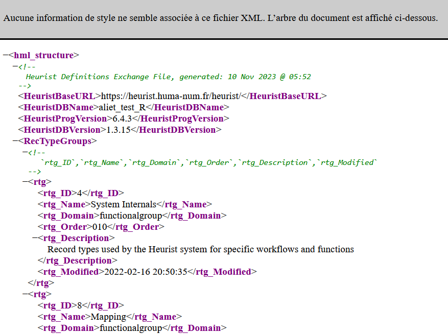
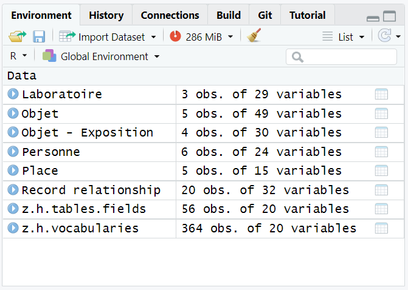
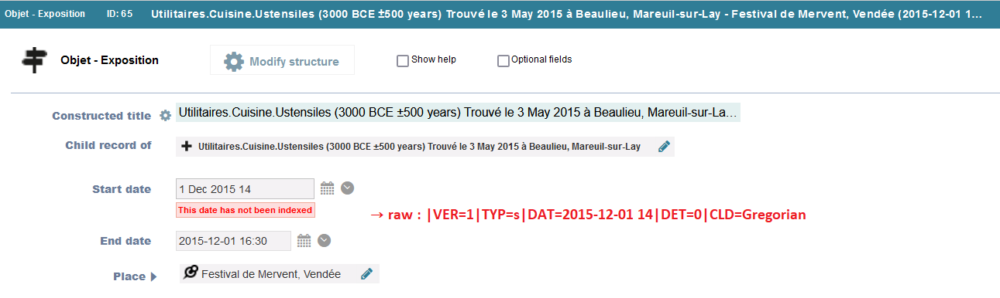
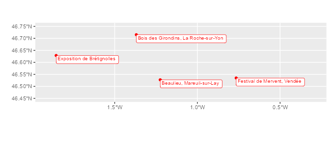

- HeuristToR
- Installation
- Before using HeuristToR : export XML files from Heurist
- Example database and data files
- Read data and paradata from Heurist database, with hr_import() function
- Renaming tables and columns - if desired
- Saving data into a R data file
HeuristToR aims to make easier quantitative analysis from Heurist databases.
Installation
You can install the development version of HeuristToR from GitHub with:
# install.packages("devtools")
devtools::install_github("alietteroux/HeuristToR")
Before using HeuristToR : export XML files from Heurist
hr_import() reads XML files exported from Heurist. To use it, two XML files must be first exported from Heurist :
- a XML file including data (fields’values entered in the database) : this XML file can be exported from Heurist via the Explore menu > Export > XML. Be careful : if some records are selected in your Heurist session during the export, only data about theses selected records may be exported.
- a XML file exported from Heurist describing database structure (vocabularies, fields’caracteristics…) : this XML file can be exported from Heurist via the Design menu > Download > Structure (XML). This should open a window looking like below : if not, please wait a few seconds or try with another web browser. Then, click with the right mouse button to save as XML.

Example database and data files
We’ve created a fictitious Heurist database, named “aliet_test_R”, viewable at https://heurist.huma-num.fr/heurist/?db=aliet_test_R&website
From this database, we’ve exported two XML files : have a look to the folder “documents/data_example” of the Github repository, or directly download these files here.
Read data and paradata from Heurist database, with hr_import() function
library(HeuristToR)
hr_import(data.file="documents/data_example/aliet_test_R_data.xml",
structure.file="documents/data_example/aliet_test_R_structure.xml")
#> We're importing data and structure files (most time-consuming step)... Thank you for waiting...
#> Data and structure files have been successfully imported. Now we're selecting and managing data... Thank you for waiting...
#> We've finished. It's ready to use !
#> Import has required 7.24 secsThis function returns several dataframes in the Environment :
- Each Heurist ‘record type’ as a dataframe : in those dataframes, each row matches a Heurist ‘record’
- A dataframe named “z.h.tables.fields” : each row describes a field in an used Heurist ‘record type’ (type, help text, requirement, repeatability…)
- A dataframe named “z.h.vocabularies” : each row matches a term in an used Heurist vocabulary ; each term is joined to a level (its ranking position in the vocabulary) and attached to its parents’terms
If hr_import() returns error messages when you’ll try it, please contact us.
With our example from this Heurist database (named “aliet_test_R”), we’ve obtained 8 dataframes :

If hr_import() has taken a long time, remember that you can save all objects of the environment in a folder, and open all of them afterwards (see below, last part of this page).
If you’re interested by the function code : hr_import() reads XML files but, actually, the function script uses readLines() to read them. Indeed, it seems that R is slow to parse XML files, and yet XML Heurist files can be very big ! Therefore, the code may seem convoluted, using regular expressions and different functions to recover XML structure. Note that previously, I had proposed an other solution using xml2 library, retrievable in the folder “documents” of the Github repository, file “archive_import_Heurist_dans_R_via_XML”. I had to give it up because it was too slow…
Thereafter, we’ll manage data using tidyr and ggplot2 ; and we’ll display tables with knitr::kable().
library(tidyverse)
library(knitr)
About columns names and formats
Let’s have a look to the dataframe Personne (6 rows and 24 columns) :
Personne %>% kable()| z.h.id.Personne | z.h.title.Personne | Nom_1 | Prénom | Sexe | Date de naissance.temporal.raw | Date de naissance.temporal.type | Date de naissance.DAT.raw | Date de naissance.DAT.year | Date de naissance.DAT.month | Date de naissance.DAT.day | Date de naissance.property.COM | Date de naissance.property.DET | Lieu de naissance.geo.type | Lieu de naissance.geo.wkt | Nombre de publications | Nom_2 | Carrière & Parentèle.relationship | z.h.added | z.h.citeAs | z.h.modified | z.h.reversePointer | z.h.workgroup | z.h.visibility | z.h.visnote | z.h.workgroup.id |
|---|---|---|---|---|---|---|---|---|---|---|---|---|---|---|---|---|---|---|---|---|---|---|---|---|---|
| 47 | Lou Ragan (invalid temporal object) Male | Ragan | Lou | Male | Printemps 1960 | Not indexed | NA | NA | NA | NA | NA | NA | point | POINT(-0.880135 47.061729) | 28 | NA | 64 // 74 // 99 | 2023-01-19 13:49:25 | https://heurist.huma-num.fr/heurist/?recID=47&db=aliet_test_R | 2023-11-10 09:09:20 | 61 // 73 | alietteroux | viewable | logged in users | 2 |
| 59 | Sandra Lacouverture (1987) Female | Lacouverture | Sandra | Female | 1987 | Other Date | NA | 1987 | NA | NA | NA | NA | point | POINT(-1.152043 46.159113) | 16 | NA | 109 // 71 | 2023-01-19 14:13:59 | https://heurist.huma-num.fr/heurist/?recID=59&db=aliet_test_R | 2023-11-10 14:34:22 | 114 // 69 // 75 | public | viewable | logged in users | 0 |
| 60 | Edgar Letracteur (3 Apr 1985) Male | Letracteur | Edgar | Male | {“timestamp”:{“in”:“1985-04-03”,“type”:“s”},“determination”:“1”,“comment”:“1985-04-03”,“estMinDate”:1985.0403,“estMaxDate”:1985.0403} | Simple Date | 1985-04-03 | 1985 | 04 | 03 | 1985-04-03 | Attested | point | POINT(-4.486009 48.390528) | 8 | Edgar Letracteur | 63 // 99 | 2023-01-19 14:14:54 | https://heurist.huma-num.fr/heurist/?recID=60&db=aliet_test_R | 2023-11-10 08:23:25 | 61 // 69 | public | viewable | logged in users | 0 |
| 77 | Gérard Manvussa (20 Jan 1971) Male | Manvussa | Gérard | Male | {“timestamp”:{“in”:“1971-01-20”,“type”:“s”},“comment”:“1971-01-20”,“estMinDate”:1971.012,“estMaxDate”:1971.012} | Simple Date | 1971-01-20 | 1971 | 01 | 20 | 1971-01-20 | NA | point | POINT(-86.851047 21.161785) | 15 | NA | 112 // 78 | 2023-01-23 07:55:53 | https://heurist.huma-num.fr/heurist/?recID=77&db=aliet_test_R | 2023-11-10 08:25:33 | NA | public | viewable | logged in users | 0 |
| 111 | Jade Or (1976) Female | Or | Jade | Female | 1976 | Other Date | NA | 1976 | NA | NA | NA | NA | point | POINT(-1.164559 46.455595) | 20 | Jade Or | 112 // 113 | 2023-02-20 07:20:01 | https://heurist.huma-num.fr/heurist/?recID=111&db=aliet_test_R | 2023-02-23 05:55:40 | 114 | public | viewable | logged in users | 0 |
| 131 | Paul Ochon (22 Jul 1975) Male | Ochon | Paul | Male | 1975-07-22 | Other Date | NA | 1975 | 7 | 22 | NA | NA | point | POINT(-1.413543 46.673118) | 19 | Paul Ochon | 132 | 2023-02-20 09:21:12 | https://heurist.huma-num.fr/heurist/?recID=131&db=aliet_test_R | 2023-02-23 05:55:18 | NA | public | viewable | logged in users | 0 |
Rows are ordered according to the column starting with “z.h.id.”. These numbers match records IDs automatically created by Heurist ; they depend on the date added.
We look at column names and formats :
data.frame(colname=names(Personne),
format=as.character(sapply(Personne, class))) %>%
kable()| colname | format |
|---|---|
| z.h.id.Personne | character |
| z.h.title.Personne | character |
| Nom_1 | character |
| Prénom | character |
| Sexe | factor |
| Date de naissance.temporal.raw | character |
| Date de naissance.temporal.type | factor |
| Date de naissance.DAT.raw | character |
| Date de naissance.DAT.year | character |
| Date de naissance.DAT.month | character |
| Date de naissance.DAT.day | character |
| Date de naissance.property.COM | character |
| Date de naissance.property.DET | character |
| Lieu de naissance.geo.type | character |
| Lieu de naissance.geo.wkt | character |
| Nombre de publications | numeric |
| Nom_2 | character |
| Carrière & Parentèle.relationship | character |
| z.h.added | character |
| z.h.citeAs | character |
| z.h.modified | character |
| z.h.reversePointer | character |
| z.h.workgroup | factor |
| z.h.visibility | factor |
| z.h.visnote | factor |
| z.h.workgroup.id | factor |
Note that :
Each dataframe contains “paradata” fields : fields starting with “z.h.”. The column starting with “z.h.title” corresponds to “Heurist title masks”.
Colnames are “display fields names” in Heurist forms (and not database fields names). Therefore, some columns may have the same name : it’s possible if the contributor has renamed an existing field with a name already present in the database (like “Nom” in our example). In such cases, hr_import() automatically adds a position number to those names (see Nom_1 and Nom_2 in our example).
Temporal, spatial and file fields are declined to several columns : see below, part “Dealing with temporal, spatial and file fields”.
-
All columns are character, except :
- some paradata fields (z.h.visibility, z.h.visnote, z.h.workgroup, z.h.workgroup.id) : factor
- fields of type “enum” or “relationtype” (see the column field.type of the dataframe z.h.tables.fields) when they are not “repeatable” (see the column field.MaxValues of the dataframe z.h.tables.fields) : factor (like Sexe in our example)
- fields ending by “.temporal.type”, describing records values of spatial fields : factor
- fields of type “float” (see the column field.type of the dataframe z.h.tables.fields) when they are not “repeatable” (see the column field.MaxValues of the dataframe z.h.tables.fields) : numeric (like Nombre de publications in our example).
Then, we’re abble to know levels of “enum” fields ; and to perform arithmetic on “float” fields :
levels(Personne$Sexe)
#> [1] "Female" "Male"
summary(Personne$`Nombre de publications`)
#> Min. 1st Qu. Median Mean 3rd Qu. Max.
#> 8.00 15.25 17.50 17.67 19.75 28.00
Dealing with “repeatable” fields (multiple values in a field for one record)
“Repetable” fields match a value not equal to 1 in the column field.MaxValues of the dataframe z.h.tables.fields. Let’s have a look to “repeatable” fields of tables Laboratoire,Objet and Personne :
z.h.tables.fields %>%
filter(table.name %in% c("Laboratoire","Objet","Personne") &
field.MaxValues!=1) %>%
select(table.name,field.DisplayName,field.type) %>%
kable()| table.name | field.DisplayName | field.type |
|---|---|---|
| Laboratoire | Membres | relmarker |
| Laboratoire | Discipline(s) | enum |
| Objet | Découvreur(s) | resource |
| Objet | Expositions | resource |
| Personne | Carrière | relmarker |
| Personne | Parentèle | relmarker |
As the column Discipline(s) of the table Laboratoire appears to be a “repeatable” field, we have a look to its records :
Laboratoire %>%
select(z.h.title.Laboratoire,`Discipline(s)`) %>%
kable()| z.h.title.Laboratoire | Discipline(s) |
|---|---|
| LRO - Laboratoire de Recherche d’Objets | Archaeology |
| IAO - Institut Afficionados d’Objets | Archaeology // Computer Science |
| OT - Objets Toujours | Archaeology |
Usign hr_import(), all different values of a “repeatable” field for one record are separated by ” // “.
We can count records in two different ways :
- looking at combinations of terms (see option A below) ;
- looking at terms only (see option B below) : in this case, we use the separate_rows() function of tidyr.
# Option A
Laboratoire %>%
count(`Discipline(s)`) %>%
kable()| Discipline(s) | n |
|---|---|
| Archaeology | 2 |
| Archaeology // Computer Science | 1 |
# Option B
Laboratoire %>%
separate_rows(`Discipline(s)`,sep= " // ") %>%
count(`Discipline(s)`) %>%
kable()| Discipline(s) | n |
|---|---|
| Archaeology | 3 |
| Computer Science | 1 |
We also use separate_rows() if we’d like to know which objects have been discovered by the different researchers (table Personne.Objet). Then, we’re abble to count discovered objects per researcher.
Objet %>% select(z.h.id.Objet,`Découvreur(s)`) %>%
kable()| z.h.id.Objet | Découvreur(s) |
|---|---|
| 61 | 47 // 60 |
| 69 | 59 // 60 |
| 73 | 47 |
| 75 | 59 |
| 114 | 111 // 59 |
Personne.Objet <- Personne %>%
select(z.h.id.Personne,z.h.title.Personne) %>%
left_join(Objet %>%
select(z.h.id.Objet,`Découvreur(s)`) %>%
separate_rows(`Découvreur(s)`,sep=" // "),
by=c("z.h.id.Personne"="Découvreur(s)"))
Personne.Objet %>% kable()| z.h.id.Personne | z.h.title.Personne | z.h.id.Objet |
|---|---|---|
| 47 | Lou Ragan (invalid temporal object) Male | 61 |
| 47 | Lou Ragan (invalid temporal object) Male | 73 |
| 59 | Sandra Lacouverture (1987) Female | 69 |
| 59 | Sandra Lacouverture (1987) Female | 75 |
| 59 | Sandra Lacouverture (1987) Female | 114 |
| 60 | Edgar Letracteur (3 Apr 1985) Male | 61 |
| 60 | Edgar Letracteur (3 Apr 1985) Male | 69 |
| 77 | Gérard Manvussa (20 Jan 1971) Male | NA |
| 111 | Jade Or (1976) Female | 114 |
| 131 | Paul Ochon (22 Jul 1975) Male | NA |
Personne.Objet %>%
group_by(z.h.title.Personne) %>%
summarise(nb.objets=sum(!is.na(z.h.id.Objet))) %>%
arrange(desc(nb.objets)) %>%
kable()| z.h.title.Personne | nb.objets |
|---|---|
| Sandra Lacouverture (1987) Female | 3 |
| Edgar Letracteur (3 Apr 1985) Male | 2 |
| Lou Ragan (invalid temporal object) Male | 2 |
| Jade Or (1976) Female | 1 |
| Gérard Manvussa (20 Jan 1971) Male | 0 |
| Paul Ochon (22 Jul 1975) Male | 0 |
Columns “z.h.reversePointer”
Since 2023, it has been being z.h.reversePointer columns in “target dataframes”. These columns report IDs of related entities. There are two types of “target dataframes” :
- “target dataframes” corresponding to resource fields ;
- “target dataframes” corresponding to children records.
“Target dataframes” corresponding to resource fields
In our example, there are 7 Heurist’fields of type resource : in Heurist’environment, each of them is of type ‘Record pointer’. For example :
- field Lieu de la trouvaille (table Objet) → table Place (target)
- field Découvreur(s) (table Objet) → table Personne (target)
z.h.tables.fields %>%
filter(field.type=="resource") %>%
select(table.name,field.DisplayName,field.type) %>%
kable()| table.name | field.DisplayName | field.type |
|---|---|---|
| Objet | Lieu de la trouvaille | resource |
| Objet | Découvreur(s) | resource |
| Objet | Expositions | resource |
| Objet - Exposition | Place | resource |
| Record relationship | Target record | resource |
| Record relationship | Source record | resource |
| Record relationship | Interpretation / commentary > | resource |
Then (for example), the dataframe Personne contains a z.h.reversePointer listing discovered objects. Lou Ragan has discovered two objects : ID-61 and ID-73 ; et l’objet ID-69 a été découvert par Sandra Lacouverture et Edgar Letracteur (see below).
Personne %>%
select(z.h.id.Personne,z.h.title.Personne,z.h.reversePointer) %>%
kable()| z.h.id.Personne | z.h.title.Personne | z.h.reversePointer |
|---|---|---|
| 47 | Lou Ragan (invalid temporal object) Male | 61 // 73 |
| 59 | Sandra Lacouverture (1987) Female | 114 // 69 // 75 |
| 60 | Edgar Letracteur (3 Apr 1985) Male | 61 // 69 |
| 77 | Gérard Manvussa (20 Jan 1971) Male | NA |
| 111 | Jade Or (1976) Female | 114 |
| 131 | Paul Ochon (22 Jul 1975) Male | NA |
Objet %>% select(z.h.id.Objet,z.h.title.Objet,`Découvreur(s)`) %>% kable()| z.h.id.Objet | z.h.title.Objet | Découvreur(s) |
|---|---|---|
| 61 | Utilitaires.Cuisine.Ustensiles (3000 BCE ±500 years) Trouvé le 3 May 2015 à Beaulieu, Mareuil-sur-Lay | 47 // 60 |
| 69 | Décoratifs (1700 to 1800) Trouvé le 15 Jan 2015 à Bois des Girondins, La Roche-sur-Yon | 59 // 60 |
| 73 | Utilitaires.Jardinage (50 BCE-200 years +100 years) Trouvé le 15 Oct 2012 à Beaulieu, Mareuil-sur-Lay | 47 |
| 75 | Utilitaires (1900 ±20 years) Trouvé le 2019 à Estuaire du Lay, Vendée | 59 |
| 114 | Utilitaires.Cuisine.Récipients (1700 BCE ±100 years) Trouvé le 5 Feb 2020 à Estuaire du Lay, Vendée | 111 // 59 |
“Target dataframes” corresponding to children records
A type of information hasn’t been well traced yet by the HeuristToR package : it’s not so easy to recover “children” fields ! In our example, the dataframe “Objet - Exposition” gathers “children” of the field Expositions (table Objet). Therefore, the dataframe “Objet - Exposition” contains a z.h.reversePointer listing “parents”’objects. The column z.h.reversePointer of a “child” dataframe is necessarily not “repeatable”.
Objet %>% select(z.h.id.Objet,Expositions) %>% kable()| z.h.id.Objet | Expositions |
|---|---|
| 61 | 65 // 67 |
| 69 | 72 |
| 73 | NA |
| 75 | NA |
| 114 | 116 |
`Objet - Exposition` %>% select(`z.h.id.Objet - Exposition`,z.h.reversePointer) %>% kable()| z.h.id.Objet - Exposition | z.h.reversePointer |
|---|---|
| 65 | 61 |
| 67 | 61 |
| 72 | 69 |
| 116 | 114 |
Gathering terms in a vocabulary
“Terms list” fields match a value “enum” in the column field.type of the dataframe z.h.tables.fields. To have a look at only informed fields (and not empty fields), we select only fields matching a value “no empty” in the column field.empty of z.h.tables.fields.
z.h.tables.fields %>%
filter(field.type=="enum" & field.empty=="no empty") %>%
select(table.name,field.DisplayName,field.type) %>%
kable()| table.name | field.DisplayName | field.type |
|---|---|---|
| Laboratoire | Discipline(s) | enum |
| Objet | Type d’objet | enum |
| Personne | Sexe | enum |
| Place | Place type | enum |
| Place | Locational certainty | enum |
| Place | Country | enum |
As the column Type d’objet of the table Objet appears to be a “terms list” field, we count records per term :
Objet %>% count(`Type d'objet`) %>% kable()| Type d’objet | n |
|---|---|
| Décoratifs | 1 |
| Jardinage | 1 |
| Récipients | 1 |
| Ustensiles | 1 |
| Utilitaires | 1 |
Actually, these terms are nested. To have a look to this vocabulary structure (or “tree”), we select rows of z.h.vocabularies for which field.JsonTermIDTree is the one of the field “Type d’objet” described in z.h.tables.fields.
voc <- z.h.vocabularies %>%
semi_join(z.h.tables.fields %>%
filter(field.DisplayName=="Type d'objet"),
by="field.JsonTermIDTree")
voc %>% kable()| field.JsonTermIDTree | trm_ID | trm_Label | trm_Label_long | trm_Domain | trm_ParentTermID | trm_InverseTermId | trm_InverseLabel | Level | max.Level | Level1 | Level2 | Level3 | Level4 | InvLevel1 | InvLevel2 | InvLevel3 | InvLevel4 | trm_Modified.Date | trm_Modified.Hour |
|---|---|---|---|---|---|---|---|---|---|---|---|---|---|---|---|---|---|---|---|
| 9465 | 9465 | Types d’objets vocab | Types d’objets vocab | enum | NA | NA | NA | 1 | 4 | Types d’objets vocab | Types d’objets vocab | Types d’objets vocab | Types d’objets vocab | NA | NA | NA | NA | 2023-01-19 | 14:46 |
| 9465 | 9522 | Décoratifs | Types d’objets vocab / Décoratifs | enum | 9465 | NA | NA | 2 | 4 | Types d’objets vocab | Décoratifs | Décoratifs | Décoratifs | NA | NA | NA | NA | 2023-01-19 | 14:44 |
| 9465 | 9521 | Utilitaires | Types d’objets vocab / Utilitaires | enum | 9465 | NA | NA | 2 | 4 | Types d’objets vocab | Utilitaires | Utilitaires | Utilitaires | NA | NA | NA | NA | 2023-01-19 | 14:44 |
| 9465 | 9524 | Bricolage | Types d’objets vocab / Utilitaires / Bricolage | enum | 9521 | NA | NA | 3 | 4 | Types d’objets vocab | Utilitaires | Bricolage | Bricolage | NA | NA | NA | NA | 2023-01-19 | 13:46 |
| 9465 | 9523 | Cuisine | Types d’objets vocab / Utilitaires / Cuisine | enum | 9521 | NA | NA | 3 | 4 | Types d’objets vocab | Utilitaires | Cuisine | Cuisine | NA | NA | NA | NA | 2023-01-19 | 13:46 |
| 9465 | 9526 | Récipients | Types d’objets vocab / Utilitaires / Cuisine / Récipients | enum | 9523 | NA | NA | 4 | 4 | Types d’objets vocab | Utilitaires | Cuisine | Récipients | NA | NA | NA | NA | 2023-01-19 | 13:46 |
| 9465 | 9527 | Ustensiles | Types d’objets vocab / Utilitaires / Cuisine / Ustensiles | enum | 9523 | NA | NA | 4 | 4 | Types d’objets vocab | Utilitaires | Cuisine | Ustensiles | NA | NA | NA | NA | 2023-01-19 | 13:46 |
| 9465 | 9525 | Jardinage | Types d’objets vocab / Utilitaires / Jardinage | enum | 9521 | NA | NA | 3 | 4 | Types d’objets vocab | Utilitaires | Jardinage | Jardinage | NA | NA | NA | NA | 2023-01-19 | 13:46 |
We see this vocabulary is named “Type d’objets vocab” (see column Level1) and is composed of 4 levels (see column maxLevel).
In following lines, we gather terms to “Level3”, then “Level2”.
# Gathering to "Level 3"
Objet %>% count(`Type d'objet`) %>%
left_join(voc,by=c("Type d'objet"="trm_Label")) %>%
group_by(Level3) %>% summarise(nb=sum(n)) %>%
kable()| Level3 | nb |
|---|---|
| Cuisine | 2 |
| Décoratifs | 1 |
| Jardinage | 1 |
| Utilitaires | 1 |
# Gathering to "Level 2"
Objet %>% count(`Type d'objet`) %>%
left_join(voc,by=c("Type d'objet"="trm_Label")) %>%
group_by(Level2) %>% summarise(nb=sum(n)) %>%
kable()| Level2 | nb |
|---|---|
| Décoratifs | 1 |
| Utilitaires | 4 |
Dealing with “Record relationship”
“Relationship marker” fields
“Relationship marker” fields match a value “relmarker” in the column field.type of the dataframe z.h.tables.fields. Let’s have a look to “relation markers” used in this database :
z.h.tables.fields %>%
filter(field.type=="relmarker") %>%
select(table.name,field.DisplayName,field.type) %>%
kable()| table.name | field.DisplayName | field.type |
|---|---|---|
| Laboratoire | Membres | relmarker |
| Personne | Carrière | relmarker |
| Personne | Parentèle | relmarker |
We see that the contributor had created 2 “relationship marker” fields in “Personne” : this usage is not recommended because it may create problems while viewing records in Heurist. It’s not recommended, but it does exist !
In the XML data file, all values of “relationship marker” fields are only informed as “relationship” : we can recover the table it belongs to, but we can’t recover the field it belongs to (when 2 “relationship marker” fields have been created in a same “record type”).
Therefore, hr_import() function automatically creates one and unique “relationship marker” field in a table : this field match a column finishing by “.relationship”. Let’s have a look to the dataframe Personne :
names(Personne)
#> [1] "z.h.id.Personne" "z.h.title.Personne"
#> [3] "Nom_1" "Prénom"
#> [5] "Sexe" "Date de naissance.temporal.raw"
#> [7] "Date de naissance.temporal.type" "Date de naissance.DAT.raw"
#> [9] "Date de naissance.DAT.year" "Date de naissance.DAT.month"
#> [11] "Date de naissance.DAT.day" "Date de naissance.property.COM"
#> [13] "Date de naissance.property.DET" "Lieu de naissance.geo.type"
#> [15] "Lieu de naissance.geo.wkt" "Nombre de publications"
#> [17] "Nom_2" "Carrière & Parentèle.relationship"
#> [19] "z.h.added" "z.h.citeAs"
#> [21] "z.h.modified" "z.h.reversePointer"
#> [23] "z.h.workgroup" "z.h.visibility"
#> [25] "z.h.visnote" "z.h.workgroup.id"“Relation” vocabularies
“Relationship marker” fields necessarily use a vocabulary. Those vocabularies match a value “relation” in the column trm_Domain of the dataframe z.h.vocabularies. Let’s have a look to the different vocabularies (Level1) used in “relationship marker” fields :
z.h.vocabularies %>%
filter(trm_Domain=="relation") %>%
distinct(Level1) %>%
kable()| Level1 |
|---|
|
|
“Record relationship” dataframe
When a contributor informs a “relationship” via a “relationship marker” in Heurist, an inverse relation is automatically created in Heurist reports. But in the XML data file, it seems we can only recover recorded relations and not their inverses (it did in January 2023 ; I haven’t had time to ckeck it in November 2023).
hr_import() duplicates each relationship of the original table : for each relationship from A to B, hr_import() automatically creates a relationship from B to A.
“Original” relationships and their “created” inverses can be distinguished by the column z.h.original of the dataframe Record relationship. Then, if you want uniquely treat “original” relationships, you can filter records on this column.
Let’s have a look to relationship records regarding family links (Level1==“4. Family”).
`Record relationship` %>%
inner_join(z.h.vocabularies %>%
filter(Level1=="4. Family"),
by=c("Relationship type"="trm_Label")) %>%
select(`z.h.id.Record relationship`,`Source record`,`Target record`,`Relationship type`,z.h.original) %>%
kable()| z.h.id.Record relationship | Source record | Target record | Relationship type | z.h.original |
|---|---|---|---|---|
| 112 | 111 | 77 | IsSiblingOf | original |
| 112 | 77 | 111 | IsSiblingOf | adding rheurist |
| 99 | 60 | 47 | IsSonOf | original |
| 99 | 47 | 60 | IsParentOf | adding rheurist |
We see that the contributor had informed “id-60 IsSonOf id-47” ; hr_import() function has automatically created its opposite (“id_47 IsParentOf id-60”), using inverse terms retrievable in z.h.vocabularies.
Let’s have a look to all relationships regarding “id-47” person :
Personne %>%
filter(z.h.id.Personne=="47") %>%
inner_join(`Record relationship`,
by=c("z.h.id.Personne"="Source record")) %>%
select(z.h.id.Personne,Nom_1,Prénom,
`z.h.id.Record relationship`,`Relationship type`,
`Target record`,z.h.original) %>%
kable()| z.h.id.Personne | Nom_1 | Prénom | z.h.id.Record relationship | Relationship type | Target record | z.h.original |
|---|---|---|---|---|---|---|
| 47 | Ragan | Lou | 64 | est membre du | 55 | original |
| 47 | Ragan | Lou | 74 | est membre du | 56 | original |
| 47 | Ragan | Lou | 99 | IsParentOf | 60 | adding rheurist |
We obtain 3 relationships : it matches content of the “relmarker” field of the dataframe Personne (column Carrière & Parentèle.relationship).
Personne %>%
filter(z.h.id.Personne=="47") %>%
select(z.h.id.Personne,`Carrière & Parentèle.relationship`) %>%
kable()| z.h.id.Personne | Carrière & Parentèle.relationship |
|---|---|
| 47 | 64 // 74 // 99 |
Please note : in the previous example, we’ve only used the column z.h.id.Personne of the dataframe Personne, and not the column Carrière & Parentèle.relationship of the dataframe Personne. Indeed, if we had joined by this column, each relation would have been duplicated.
Dealing with “Place”
Since 2023, the dataframe Place (corresponding to the eponymous ‘record type’) has contained a column named z.h.reversePointer. This column reports ID of related entities.
For instance, let’s see where objects (dataframe Objet) have been found (field ‘Lieu de la trouvaille’ referring to Place) :
Objet %>%
select(z.h.id.Objet,z.h.title.Objet,`Lieu de la trouvaille`) %>%
kable()| z.h.id.Objet | z.h.title.Objet | Lieu de la trouvaille |
|---|---|---|
| 61 | Utilitaires.Cuisine.Ustensiles (3000 BCE ±500 years) Trouvé le 3 May 2015 à Beaulieu, Mareuil-sur-Lay | 62 |
| 69 | Décoratifs (1700 to 1800) Trouvé le 15 Jan 2015 à Bois des Girondins, La Roche-sur-Yon | 70 |
| 73 | Utilitaires.Jardinage (50 BCE-200 years +100 years) Trouvé le 15 Oct 2012 à Beaulieu, Mareuil-sur-Lay | 62 |
| 75 | Utilitaires (1900 ±20 years) Trouvé le 2019 à Estuaire du Lay, Vendée | 76 |
| 114 | Utilitaires.Cuisine.Récipients (1700 BCE ±100 years) Trouvé le 5 Feb 2020 à Estuaire du Lay, Vendée | 76 |
We find these values of z.h.id.Objet in the field z.h.reversePointer of the dataframe Place :
Place %>%
select(z.h.id.Place,z.h.title.Place,z.h.reversePointer) %>%
kable()| z.h.id.Place | z.h.title.Place | z.h.reversePointer |
|---|---|---|
| 62 | Beaulieu, Mareuil-sur-Lay | 61 // 73 |
| 66 | Festival de Mervent, Vendée | 65 // 72 |
| 68 | Exposition de Brétignolles | 116 // 67 |
| 70 | Bois des Girondins, La Roche-sur-Yon | 69 |
| 76 | Estuaire du Lay, Vendée | 114 // 75 |
Normally, the dataframe Place contains a field of type “geo” : how to deal with this field ? See below, “Dealing with temporal, spatial and file fields”.
Dealing with temporal, spatial and file fields
We name “temporal, spatial and file fields” the values informed in fields (or “detail types” in Heurist language) of type “date”, “geo” or “file”.
These fields match a value “date”, “geo” or “file” in the column field.type of the dataframe z.h.tables.fields. To have a look at only informed fields (and not empty fields), we select only fields matching a value “no empty” in the column field.empty of z.h.tables.fields.
z.h.tables.fields %>%
filter(field.type %in% c("date","geo","file") &
field.empty=="no empty") %>%
select(table.name,field.DisplayName,field.type) %>%
arrange(table.name,field.type) %>%
kable()| table.name | field.DisplayName | field.type |
|---|---|---|
| Laboratoire | Date de création | date |
| Laboratoire | Date de fin | date |
| Laboratoire | Logo | file |
| Objet | Date de création | date |
| Objet | Date de la trouvaille | date |
| Objet - Exposition | Start date | date |
| Objet - Exposition | End date | date |
| Personne | Date de naissance | date |
| Personne | Lieu de naissance | geo |
| Place | Location (mappable) | geo |
| Record relationship | Start date/time | date |
| Record relationship | End date/time | date |
Temporal fields
There are different types of “temporal” fields :
- C14 Date : if the Heurist contributor has clicked on the symbol “clock”, then Radiometric tab ;
- Date Range : if the Heurist contributor has clicked on the symbol “clock”, then Fuzzy Range tab ;
- Approximate Date : if the Heurist contributor has clicked on the symbol “clock”, then Simple Range tab ;
- Not indexed : if the Heurist contributor hasn’t clicked on the symbol “clock” or “calendar”, and if the value is unlike “YYYY-MM-DD” (or “YYYY-MM” or “YYYY”) ;
- Simple Date and Other Date : actually, since a Heurist’s update in 2023, I’ve not understood the difference beetween them… Unlike Other Dates, Simple Dates are defined through a <temporal> tag in the Heurist XML export. In November 2023, some actions certainly create <temporal> tags : if we click on the symbol “clock” AND THEN whe choose ‘Type of Determination’ OR define a ‘Simple Range’, ‘Fuzzy Range’ or ‘Radiometric’. But sometimes, when the value looks like “YYYY-MM-DD” or “YYYY”, a <temporal> tag appears whereas these actions have not been taken. However, writing a value like “YYYY-MM-DD” or “YYYY” does not systematically create a <temporal> tag ! Before 2023, a “temporal field” without any <temporal> tag meant that the contributor had never clicked on clock or calendar symbols for this field, and then we used to inform “Manual Date” instead of “Other Date”.
“Temporal” fields are declined into several columns according to the “temporal.type” of the value in the original XML file.
For example, in the dataframe Personne, values of Date de naissance have been recorded by three ways :
- manually, without following the “YYYY-MM-DD” format (= “Not indexed”)
- following the “YYYY-MM-DD” (or “YYYY” or “YYYY-MM”) format (= “Simple Date” and “Other Date”)
# Count "temporal.type"
Personne %>% count(`Date de naissance.temporal.type`) %>%
kable()| Date de naissance.temporal.type | n |
|---|---|
| Not indexed | 1 |
| Other Date | 3 |
| Simple Date | 2 |
# Colnames
names(Personne)[grepl("^Date de naissance.+",names(Personne))]
#> [1] "Date de naissance.temporal.raw" "Date de naissance.temporal.type"
#> [3] "Date de naissance.DAT.raw" "Date de naissance.DAT.year"
#> [5] "Date de naissance.DAT.month" "Date de naissance.DAT.day"
#> [7] "Date de naissance.property.COM" "Date de naissance.property.DET"
# Records
Personne %>%
select(z.h.title.Personne,starts_with("Date de naissance")) %>%
kable()| z.h.title.Personne | Date de naissance.temporal.raw | Date de naissance.temporal.type | Date de naissance.DAT.raw | Date de naissance.DAT.year | Date de naissance.DAT.month | Date de naissance.DAT.day | Date de naissance.property.COM | Date de naissance.property.DET |
|---|---|---|---|---|---|---|---|---|
| Lou Ragan (invalid temporal object) Male | Printemps 1960 | Not indexed | NA | NA | NA | NA | NA | NA |
| Sandra Lacouverture (1987) Female | 1987 | Other Date | NA | 1987 | NA | NA | NA | NA |
| Edgar Letracteur (3 Apr 1985) Male | {“timestamp”:{“in”:“1985-04-03”,“type”:“s”},“determination”:“1”,“comment”:“1985-04-03”,“estMinDate”:1985.0403,“estMaxDate”:1985.0403} | Simple Date | 1985-04-03 | 1985 | 04 | 03 | 1985-04-03 | Attested |
| Gérard Manvussa (20 Jan 1971) Male | {“timestamp”:{“in”:“1971-01-20”,“type”:“s”},“comment”:“1971-01-20”,“estMinDate”:1971.012,“estMaxDate”:1971.012} | Simple Date | 1971-01-20 | 1971 | 01 | 20 | 1971-01-20 | NA |
| Jade Or (1976) Female | 1976 | Other Date | NA | 1976 | NA | NA | NA | NA |
| Paul Ochon (22 Jul 1975) Male | 1975-07-22 | Other Date | NA | 1975 | 7 | 22 | NA | NA |
Columns containing “.DAT.” are only informed for “Simple Dates”, “Approximate Dates” and “Other Dates” (N.B : columns ending with “.DAT.raw” are only informed for “Simple Dates” and “Approximate Dates”).
If we want to transform “temporal” fields into “date vectors”, we have to be careful :
- some values can not refer to a “numeric” date (example : “Printemps 1960”) - that’s why it’s important to distinguish “Not indexed” dates ;
- “Other Dates” formats can be different : some of those can refer to a specific day, others to a month, others to a year…
In following lines, we choose to consider the first day of the first month, when day or month are not informed.
Personne %>%
mutate_at(vars(`Date de naissance.DAT.month`,
`Date de naissance.DAT.day`),
replace_na,"01") %>%
mutate(date_naiss = as.Date(str_c(`Date de naissance.DAT.year`,
`Date de naissance.DAT.month`,
`Date de naissance.DAT.day`,
sep="-"))) %>%
select(z.h.title.Personne,date_naiss) %>%
arrange(date_naiss) %>%
kable()| z.h.title.Personne | date_naiss |
|---|---|
| Gérard Manvussa (20 Jan 1971) Male | 1971-01-20 |
| Paul Ochon (22 Jul 1975) Male | 1975-07-22 |
| Jade Or (1976) Female | 1976-01-01 |
| Edgar Letracteur (3 Apr 1985) Male | 1985-04-03 |
| Sandra Lacouverture (1987) Female | 1987-01-01 |
| Lou Ragan (invalid temporal object) Male | NA |
In the dataframe Objet, values of Date de création have been recorded by three ways : “Approximate Date”, “C14 Date” and “Date range” (see below).
Objet %>% count(`Date de création.temporal.type`) %>% kable()| Date de création.temporal.type | n |
|---|---|
| Approximate Date | 1 |
| C14 Date | 3 |
| Date Range | 1 |
Therefore, Date de création is declined into several columns :
- TPQ (Terminus Post-Quem),PDB (Probable Date Begin),PDE (Probable Date End) and TAQ (Terminus Ante-Quem) deal with “Date Range” ;
- BCE (Before Current Era),BDP (Before Present),DEV (Std dev), DVP (Pos Dev) and DVN (Neg Dev) deal with “C14 Date” ;
- DAT (Date) and RNG (Range) deal with “Approximate Date”.
# Colnames
names(Objet)[grepl("^Date de création.+",names(Objet))]
#> [1] "Date de création.temporal.raw" "Date de création.temporal.type"
#> [3] "Date de création.DAT.raw" "Date de création.DAT.year"
#> [5] "Date de création.TPQ.raw" "Date de création.TPQ.year"
#> [7] "Date de création.PDB.raw" "Date de création.PDB.year"
#> [9] "Date de création.PDE.raw" "Date de création.PDE.year"
#> [11] "Date de création.TAQ.raw" "Date de création.TAQ.year"
#> [13] "Date de création.BCE.raw" "Date de création.BCE.year"
#> [15] "Date de création.BPD.raw" "Date de création.BPD.year"
#> [17] "Date de création.DEV.raw" "Date de création.DEV.year"
#> [19] "Date de création.DVP.raw" "Date de création.DVP.year"
#> [21] "Date de création.DVN.raw" "Date de création.DVN.year"
#> [23] "Date de création.RNG.raw" "Date de création.RNG.year"
#> [25] "Date de création.property.COD" "Date de création.property.DET"
# Records
Objet %>%
select(z.h.title.Objet,starts_with("Date de création")) %>%
kable()| z.h.title.Objet | Date de création.temporal.raw | Date de création.temporal.type | Date de création.DAT.raw | Date de création.DAT.year | Date de création.TPQ.raw | Date de création.TPQ.year | Date de création.PDB.raw | Date de création.PDB.year | Date de création.PDE.raw | Date de création.PDE.year | Date de création.TAQ.raw | Date de création.TAQ.year | Date de création.BCE.raw | Date de création.BCE.year | Date de création.BPD.raw | Date de création.BPD.year | Date de création.DEV.raw | Date de création.DEV.year | Date de création.DVP.raw | Date de création.DVP.year | Date de création.DVN.raw | Date de création.DVN.year | Date de création.RNG.raw | Date de création.RNG.year | Date de création.property.COD | Date de création.property.DET |
|---|---|---|---|---|---|---|---|---|---|---|---|---|---|---|---|---|---|---|---|---|---|---|---|---|---|---|
| Utilitaires.Cuisine.Ustensiles (3000 BCE ±500 years) Trouvé le 3 May 2015 à Beaulieu, Mareuil-sur-Lay | {“timestamp”:{“in”:-3000,“type”:“c”,“bp”:false,“deviation”:“P500Y”},“native”:“3000 BCE”,“labcode”:“VOSON”,“estMinDate”:-3500,“estMaxDate”:-2500} | C14 Date | NA | NA | NA | NA | NA | NA | NA | NA | NA | NA | 3000 | 3000 | NA | NA | P500Y | 500 | NA | NA | NA | NA | NA | NA | VOSON | NA |
| Décoratifs (1700 to 1800) Trouvé le 15 Jan 2015 à Bois des Girondins, La Roche-sur-Yon | {“start”:{“earliest”:“1700”,“latest”:“1740”},“end”:{“latest”:“1800”,“earliest”:“1760”},“estMinDate”:1700,“estMaxDate”:1800.1231} | Date Range | NA | NA | 1700 | 1700 | 1740 | 1740 | 1760 | 1760 | 1800 | 1800 | NA | NA | NA | NA | NA | NA | NA | NA | NA | NA | NA | NA | NA | NA |
| Utilitaires.Jardinage (50 BCE-200 years +100 years) Trouvé le 15 Oct 2012 à Beaulieu, Mareuil-sur-Lay | {“timestamp”:{“in”:-50,“type”:“c”,“bp”:true,“deviation_negative”:“P200Y”,“deviation_positive”:“P100Y”},“native”:“2000 BP”,“labcode”:“VOSON”,“estMinDate”:-250,“estMaxDate”:150} | C14 Date | NA | NA | NA | NA | NA | NA | NA | NA | NA | NA | NA | NA | 2000 | 2000 | NA | NA | P100Y | 100 | P200Y | 200 | NA | NA | VOSON | NA |
| Utilitaires (1900 ±20 years) Trouvé le 2019 à Estuaire du Lay, Vendée | {“timestamp”:{“in”:“1900”,“deviation”:“P20Y”,“type”:“f”},“determination”:“3”,“estMinDate”:1880,“estMaxDate”:1920} | Approximate Date | 1900 | 1900 | 1880 | 1880 | NA | NA | NA | NA | 1920 | 1920 | NA | NA | NA | NA | NA | NA | NA | NA | NA | NA | P20Y | 20 | NA | Measurement |
| Utilitaires.Cuisine.Récipients (1700 BCE ±100 years) Trouvé le 5 Feb 2020 à Estuaire du Lay, Vendée | {“timestamp”:{“in”:-1700,“type”:“c”,“bp”:false,“deviation”:“P100Y”},“native”:“1700 BCE”,“labcode”:“blabla”,“estMinDate”:-1800,“estMaxDate”:-1600} | C14 Date | NA | NA | NA | NA | NA | NA | NA | NA | NA | NA | 1700 | 1700 | NA | NA | P100Y | 100 | NA | NA | NA | NA | NA | NA | blabla | NA |
Values of “temporal” fields can be described by several columns specifying “year”, “month”, “day” (see above Date de naissance), but also “hours”, “minutes” and “seconds”. For example, End date in the dataframe Objet Exposition :
# Colnames
names(`Objet - Exposition`)[grepl("^End date.+",names(`Objet - Exposition`))]
#> [1] "End date.temporal.raw" "End date.temporal.type" "End date.DAT.raw"
#> [4] "End date.DAT.year" "End date.DAT.month" "End date.DAT.day"
#> [7] "End date.DAT.hour" "End date.DAT.minutes" "End date.DAT.seconds"
#> [10] "End date.property.DET" "End date.1" "End date.2"
# Records
`Objet - Exposition` %>%
select(`z.h.id.Objet - Exposition`,starts_with("End date")) %>%
kable()| z.h.id.Objet - Exposition | End date.temporal.raw | End date.temporal.type | End date.DAT.raw | End date.DAT.year | End date.DAT.month | End date.DAT.day | End date.DAT.hour | End date.DAT.minutes | End date.DAT.seconds | End date.property.DET | End date | End date.1 | End date.2 |
|---|---|---|---|---|---|---|---|---|---|---|---|---|---|
| 65 | 2015-12-01 16:30 | Other Date | NA | 2015 | 12 | 1 | NA | NA | NA | NA | 00 // 16 // 30 | 00 // 16 // 30 | 00 // 16 // 30 |
| 67 | {“timestamp”:{“in”:“2017-04-10 17:30:30”,“type”:“s”},“determination”:“1”,“estMinDate”:2017.041,“estMaxDate”:2017.041} | Simple Date | 2017-04-10 17:30:30 | 2017 | 04 | 10 | 17 | 30 | 30 | Attested | NA | NA | NA |
| 72 | 2016-12-15 | Other Date | NA | 2016 | 12 | 15 | NA | NA | NA | NA | NA | NA | NA |
| 116 | |VER=1|TYP=s|DAT=2022-12-09 16|DET=0|CLD=Gregorian | Not indexed | NA | NA | NA | NA | NA | NA | NA | NA | NA | NA | NA |
N.B : Values of “raw” for dates have been modified in 2023, as a result of a Heurist’s update. See below some examples of changes :
| temporal.type | Before 2023 | After a Heurist’s update in 2023 |
|---|---|---|
| Date Range | VER=1|TYP=p|TPQ=2012-10-15|TAQ=2015-05-03|DET=0|CLD=Gregorian|SPF=0|EPF=0 | {“start”:{“earliest”:“2012-10-15”},“end”:{“latest”:“2015-05-03”},“estMinDate”:2012.1015,“estMaxDate”:2015.0503} |
| Date Range | VER=1|TYP=p|PDB=1740|PDE=1760|TPQ=1700|TAQ=1800|DET=0|CLD=Gregorian|SPF=0|EPF=0 | {“start”:{“earliest”:“1700”,“latest”:“1740”},“end”:{“latest”:“1800”,“earliest”:“1760”},“estMinDate”:1700,“estMaxDate”:1800.1231} |
| C14 Date | VER=1|TYP=c|BCE=1700|DEV=P100Y|DET=0|COD=blabla | {“timestamp”:{“in”:-1700,“type”:“c”,“bp”:false,“deviation”:“P100Y”},“native”:“1700 BCE”,“labcode”:“blabla”,“estMinDate”:-1800,“estMaxDate”:-1600} |
It seems that the format “Before 2023” remains for some dates that, after a Heurist’update, have become not indexed. See this example below :

Spatial fields
“Spatial” fields are always declined into 2 columns :
- one finishing by “.geo.type”
- one finishing by “.geo.wkt”
Let’s have a look with Location (mappable) of the dataframe Place :
# Colnames
names(Place)[grepl("^Location \\(mappable\\).+",names(Place))]
#> [1] "Location (mappable).geo.type" "Location (mappable).geo.wkt"
# Records
Place %>%
select(z.h.title.Place,starts_with("Location (mappable)")) %>%
kable()| z.h.title.Place | Location (mappable).geo.type | Location (mappable).geo.wkt |
|---|---|---|
| Beaulieu, Mareuil-sur-Lay | point | POINT(-1.22474 46.527361) |
| Festival de Mervent, Vendée | point | POINT(-0.76561 46.534892) |
| Exposition de Brétignolles | point | POINT(-1.853889 46.628611) |
| Bois des Girondins, La Roche-sur-Yon | point | POINT(-1.3693 46.715296) |
| Estuaire du Lay, Vendée | polygon | POLYGON((-1.316729 46.3353,-1.314411 46.328301,-1.305571 46.31958,-1.29673 46.318631,-1.299734 46.326877,-1.30909 46.332038,-1.316729 46.3353)) |
Using sf package, we’re abble to cartography a “spatial field” of type “point” by this way :
library(sf)
# Creating a sf object with sf::st_as_sf()
sf_Place_point <- Place %>%
filter(`Location (mappable).geo.type`=="point") %>%
rename("geom"="Location (mappable).geo.wkt") %>%
st_as_sf(wkt = "geom",crs = st_crs(4326))
# Plotting with ggplot2
sf_Place_point %>%
ggplot() +
geom_sf(col="red") +
geom_sf_label(aes(label=z.h.title.Place,hjust=0, vjust = 1),
col="red",size=2.7)
File fields
“File” fields may be declined into several columns describing file paradata.
Let’s have a look with Logo of the dataframe Laboratoire :
# Colnames
names(Laboratoire)[grepl("^Logo.+",names(Laboratoire))]
#> [1] "Logo.file.date" "Logo.file.fileSize" "Logo.file.id"
#> [4] "Logo.file.mimeType" "Logo.file.nonce" "Logo.file.origName"
#> [7] "Logo.file.url"
# Records
Laboratoire %>%
select(z.h.title.Laboratoire,starts_with("Logo")) %>%
kable()| z.h.title.Laboratoire | Logo.file.date | Logo.file.fileSize | Logo.file.id | Logo.file.mimeType | Logo.file.nonce | Logo.file.origName | Logo.file.url |
|---|---|---|---|---|---|---|---|
| LRO - Laboratoire de Recherche d’Objets | 2023-02-08 06:08:50 | 1 kB | 2 | image/png | 1c21c313d58abf1443923f88681e2816efe808ae | logo_labo_LRO.png | https://heurist.huma-num.fr/heurist/?db=aliet_test_R&file=1c21c313d58abf1443923f88681e2816efe808ae |
| IAO - Institut Afficionados d’Objets | 2023-02-08 06:08:31 | 1 kB | 1 | image/png | 840c8ff9cf99cf29958338c197da9cb028f5b613 | logo_labo_IAO.png | https://heurist.huma-num.fr/heurist/?db=aliet_test_R&file=840c8ff9cf99cf29958338c197da9cb028f5b613 |
| OT - Objets Toujours | 2023-02-20 07:17:52 | 2 kB | 3 | image/png | 11dbda0ecd0029a73c3e327be7e1467a49aa8056 | logo_labo_OT.png | https://heurist.huma-num.fr/heurist/?db=aliet_test_R&file=11dbda0ecd0029a73c3e327be7e1467a49aa8056 |
When you click on the URL (column Logo.file.URL), the file appears in a new window.
Renaming tables and columns - if desired
To avoid using this symbol ` in R, remember that you can easily remove spaces, dashes, slashes, commas, quotations marks, ampersands and parenthesis from colnames and dataframes names. Indeed, if “TRUE”, the argument rename.tab.col of the hr_import function replaces these characters by dots.
hr_import(data.file="documents/data_example/aliet_test_R_data.xml",
structure.file="documents/data_example/aliet_test_R_structure.xml",
rename.tab.col=TRUE)
#> We're importing data and structure files (most time-consuming step)... Thank you for waiting...
#> Data and structure files have been successfully imported. Now we're selecting and managing data... Thank you for waiting...
#> We've finished. It's ready to use !
#> Spaces, dashes, slashes, commas, quotations marks, ampersands and parenthesis have been removed from names, replaced with dots
#> Import has required 7.86 secsDataframes names :
ls()
#> [1] "Laboratoire" "Objet" "Objet.Exposition"
#> [4] "Personne" "Place" "Record.relationship"
#> [7] "z.h.tables.fields" "z.h.vocabularies"And for instance, colnames of Objet when rename.tab.col=F and rename.tab.col=T :
| rename.tab.col = F | rename.tab.col = T |
|---|---|
| Type d’objet | Type.d.objet |
| Hauteur (cm) | Hauteur.cm. |
| Date de la trouvaille.temporal.raw | Date.de.la.trouvaille.temporal.raw |
| Date de la trouvaille.temporal.type | Date.de.la.trouvaille.temporal.type |
| Date de la trouvaille.DAT.raw | Date.de.la.trouvaille.DAT.raw |
| Date de la trouvaille.DAT.year | Date.de.la.trouvaille.DAT.year |
| Date de la trouvaille.DAT.month | Date.de.la.trouvaille.DAT.month |
| Date de la trouvaille.DAT.day | Date.de.la.trouvaille.DAT.day |
| Date de la trouvaille.property.COM | Date.de.la.trouvaille.property.COM |
| Date de la trouvaille.property.DET | Date.de.la.trouvaille.property.DET |
| Lieu de la trouvaille | Lieu.de.la.trouvaille |
| Découvreur(s) | Découvreur.s. |
Please note : The parameter rename.tab.col=TRUE creates two additional columns in the dataframe z.h.tables.fields : table.name.renamed and field.renamed.
z.h.tables.fields %>% filter(table.name=="Objet") %>%
select(table.name,field.DisplayName,table.name.renamed,field.renamed) %>%
kable()| table.name | field.DisplayName | table.name.renamed | field.renamed |
|---|---|---|---|
| Objet | Date de création | Objet | Date.de.création |
| Objet | Lieu de la trouvaille | Objet | Lieu.de.la.trouvaille |
| Objet | Type d’objet | Objet | Type.d.objet |
| Objet | Découvreur(s) | Objet | Découvreur.s. |
| Objet | Expositions | Objet | Expositions |
| Objet | Commentaires | Objet | Commentaires |
| Objet | Date de la trouvaille | Objet | Date.de.la.trouvaille |
| Objet | Hauteur (cm) | Objet | Hauteur.cm. |
Saving data into a R data file
If hr_import() has taken a long time, remember that you can save your workspace to a file named .RData, and quickly restore it. We give an example in following lines (we’d like to save all objects of the enviroment in a folder named “export”) :
# Saving all objects of the environment
save.image(file = "export/aliet_test_R.RData")
# Restoring all of these objects
load("export/aliet_test_R.RData")